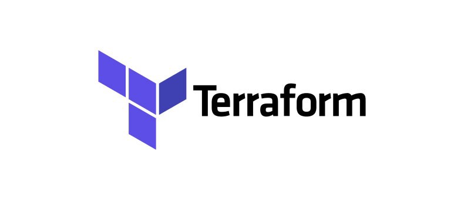
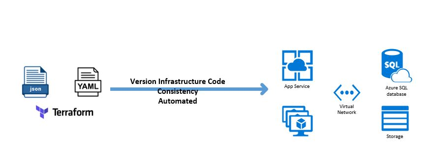
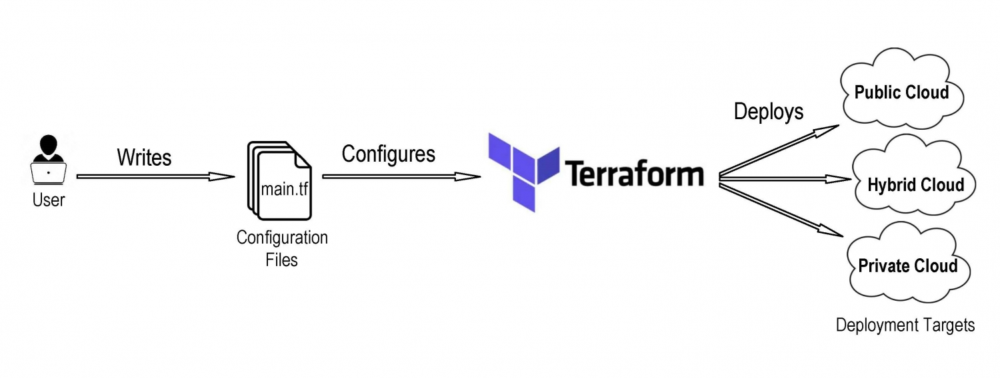
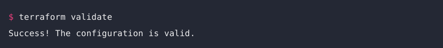

class: center, middle --- <p style = "text-align: justify;"> # Terraform - Infraestrutura como Código </p>  ##### Ezzio Moreira --- ## Quem sou eu???? ### ${{ Ezzio_Moreira }} - Adepto da cultura DevOps. - Estou aprendendo GitOps e Kubernetes. - Sou DevOps/SRE na pagar.me. - Faço parte da Mentoria IaC. - Estou contribuindo na tradução da doc. do k8s. - Certifica - AWS Solutions Architect Associate. - Certificado - Terraform Associate. <p style = "text-align: right;"> <img src="./img/me.jpg" height="160" width="170" alt = "me"> </p> --- ## O que é Infraestrutura como Código? <p style = "text-align: justify;"> As ferramentas de infraestrutura como código (IaC) permitem gerenciar a infraestrutura com arquivos de configuração. É possivel alterar, gerenciar sua infraestrutura de maneira segura, consistente e repetível, compartilhar, versionar e reutilizar os arquivo de configuração. </p> <a href="https://learn.hashicorp.com/tutorials/terraform/infrastructure-as-code">What is Infrastructure as Code with Terraform?</a> <p style = "text-align: center;">  </p> --- ## O que é Terraform? <p style = "text-align: justify;"> Terraform é uma ferramenta IaC de código aberto criada pela Hashicorp. Permite que o usuário declare as características da infra utilizando a linguagem HCL (HashiCorp Configuration Language). Umas das vantagens do Terraform é que ele guarda o estado da infraestrutura. </p> <p style = "text-align: center;">  </p> --- ## Como declarar a infraestrutura? Escreva o código utilizando arquivos com extensão **.tf** é nesses arquivos que podemos descrever a infraestrutura desejada. ```hcl terraform { backend "s3" { bucket = "nome-bucket" key = "path/nome-tfstate" region = "us-east-1" } } provider "aws" { version = "~> 3.0" region = "us-east-1" } resource "aws_instance" "app_server" { ami = "ami-830c94e3" instance_type = "t2.micro" tags = { Name = "AppServerInstance" } } ``` --- ## Blocos: Os blocos contêm argumentos que você usa para configurar o recurso. - **Bloco Terraform:** - O bloco **`terraform {}`** contém as configurações do Terraform, incluindo local de armazenamento do arquivo de estado `tfstate`. - **Bloco provider:** - O bloco **`provider {}`** especifica qual provedor será utilizando, neste caso `aws`. - **Bloco resource:** - O bloco **`resource {}`** define quais componentes serão criados no provider. <a href="https://learn.hashicorp.com/tutorials/terraform/aws-build?in=terraform/aws-get-started">Constrir infraestrutura.</a> --- ## Arquivo variable.tf Podemos declarar as variáveis de configuração e seus respectivos valores. Para acessar o valor de uma variável utilizamos: **`var.nome-variavel`** ```yaml variable "instance_type" { type = string default = "t3a.small" description = "The instance type." } variable "count-instance" { default = "1" description = "The number of instance" } resource "aws_instance" "devops" { count = var.count_instance ami = "ami-830c94e3123" instance_type = var.instance_type tags = var.default_tags } ``` --- # Comandos mais usados: <table border="8"> <tr> <th>Comando</th> <th>Descrição</th> </tr> <tr> <td>terraform init </td> <td>Cria backend e baixa os plugins do provedor.</td> </tr> <tr> <td>terraform plan</td> <td>Mostra o plano de execução do terraform.</td> </tr> <tr> <td>terraform apply</td> <td>Cria e altera os recursos no provedor.</td> </tr> <tr> <td>terraform destoy</td> <td>Destrói todos recursos que foram criados pelo tf.</td> </tr> <tr> <td>terraform fmt</td> <td>Formata os arquivos .tf.</td> </tr> <tr> <td>terraform validate</td> <td>Valide sua configuração dos arquivos .tf.</td> </tr> <tr> <td>terraform show</td> <td>Inspecione o estado tfstate atual.</td> </tr> </table> <p style = "text-align: left;">  </p> --- ## Por onde começar? Recomendo os seguintes cursos e treinamentos: - Descomplicando Terraform com Gomex: https://www.linuxtips.io/products/treinamento-descomplicando-o-terraform - HashiCorp Learn: https://learn.hashicorp.com/terraform - Participar da Mentoria IaC: https://mentoriaiac.com - Terraform para Certificação com Zeal Vora: https://www.udemy.com/course/terraform-beginner-to-advanced - Simulados Wizlabs: https://www.whizlabs.com/learn/course/hashicorp-certified-terraform-associate <p style = "text-align: right;"> </p> --- # Contato: - [https://www.linkedin.com/in/ezzio-moreira-89587898/](https://www.linkedin.com/in/ezzio-moreira-89587898/) - [https://github.com/EzzioMoreira](https://github.com/EzzioMoreira) - Email: enzziom@gmail.com - Estou no Telegram, grupo DevOps_CE: https://t.me/devopsce - Estou na Mentoria IaC: https://mentoriaiac.com <p style = "text-align: right;"> </p> ---